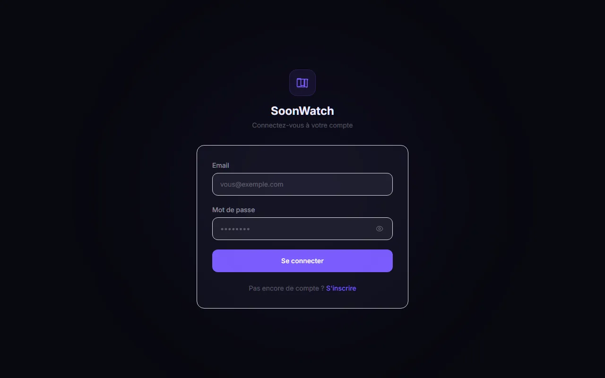
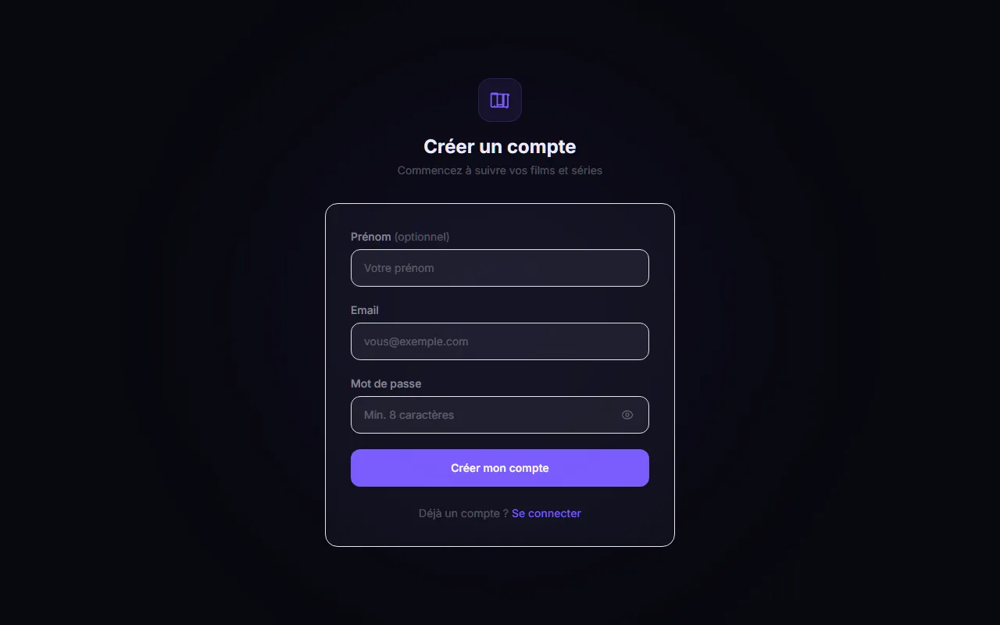
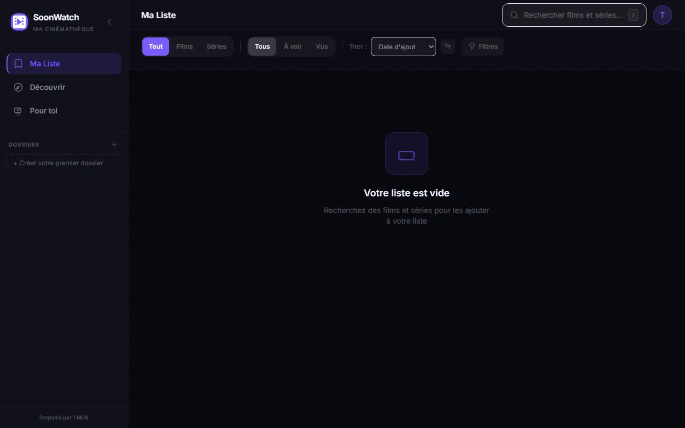
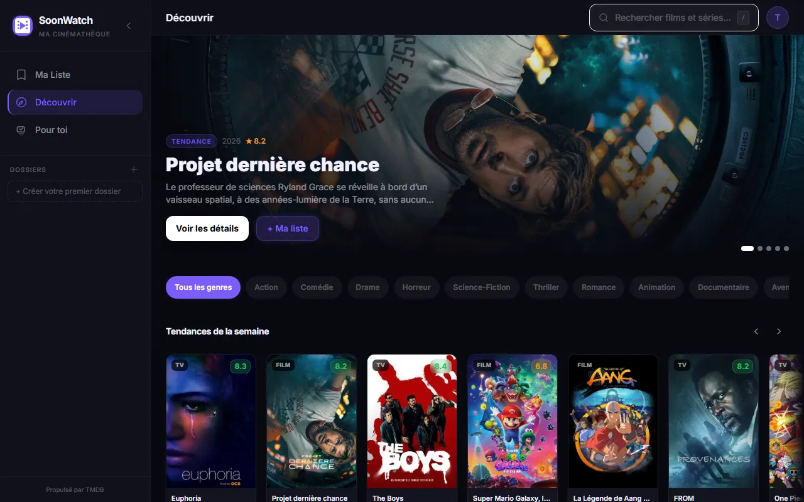
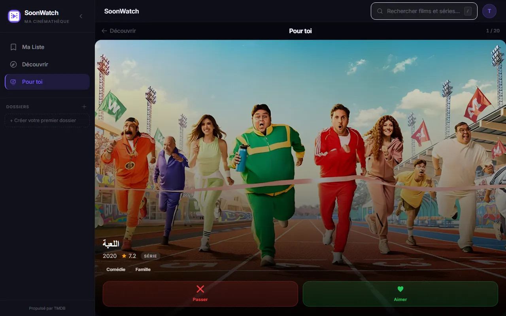
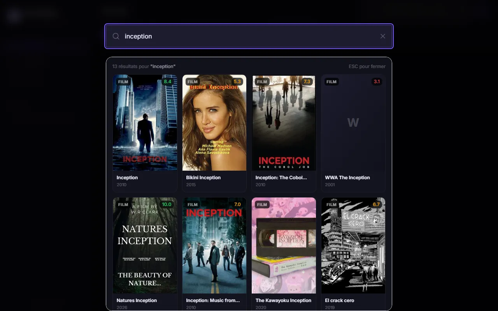

Présentation du projet
SoonWatch est une application web complète de gestion de watchlist pour les films et séries. Elle offre une expérience de découverte de contenu inspirée des interfaces modernes : un mode de navigation classique par catégories (style Netflix) et un mode swipe à la Tinder pour découvrir de nouveaux films. L'ensemble est alimenté par l'API TMDB (The Movie Database) et repose sur une architecture full-stack découplée avec React côté client et Node.js/Express côté serveur.
Aperçu de l'application

Connexion
Interface de connexion épurée. L'authentification repose sur des tokens JWT stockés dans des cookies HttpOnly, garantissant une sécurité maximale contre les attaques XSS. Chaque utilisateur possède un espace de données totalement isolé.

Création de compte
Formulaire d'inscription simple et rapide. À la création du compte, un espace personnel est instancié côté base de données : watchlist, dossiers et historique de swipes sont propres à chaque utilisateur.

Ma Liste
Tableau de bord principal avec la sidebar de navigation. La watchlist permet de gérer ses films et séries : drag & drop pour réordonner, filtres par statut (vu / à voir), notes personnelles, et organisation en dossiers hiérarchiques avec couleurs et icônes.

Découvrir
Page de découverte inspirée de Netflix : bannière héro avec un film mis en avant, puis des rangées thématiques (tendances, les mieux notés, nouveautés…). Toutes les données proviennent de l'API TMDB en temps réel, avec mise en cache côté serveur.

Pour toi — mode Swipe
Fonctionnalité phare de SoonWatch : un mode de découverte style Tinder. Chaque film est présenté en plein écran avec son affiche, sa note et ses genres. Un ❤️ l'ajoute directement à la liste, un ✗ le masque définitivement du feed. L'historique des passes est persisté en base de données.

Recherche
Modal de recherche accessible instantanément (raccourci clavier /). Les résultats sont récupérés en temps réel depuis l'API TMDB au fil de la frappe. Chaque résultat peut être ajouté en un clic à la watchlist sans quitter la recherche.
Fonctionnalités principales
Watchlist personnelle
Gestion complète avec drag & drop, filtres multi-critères, notes et statut vu/non vu pour chaque entrée.
Dossiers hiérarchiques
Organisation en dossiers personnalisables avec couleurs et icônes pour classer sa liste par genre, humeur ou priorité.
Découverte style Netflix
Navigation par catégories avec bannière héro et rangées thématiques alimentées en temps réel par l'API TMDB.
Mode swipe Tinder
Découverte gamifiée : like pour ajouter à la liste, pass pour masquer définitivement, avec historique persisté par utilisateur.
Recherche temps réel
Recherche TMDB instantanée déclenchée au clavier, avec ajout rapide depuis les résultats.
Multi-compte isolé
Architecture multi-utilisateur : chaque compte dispose d'un espace totalement isolé, aucune donnée partagée.
Auth JWT sécurisée
Authentification par tokens JWT dans des cookies HttpOnly, protégée contre XSS et CSRF.
Déploiement Docker
Stack complète orchestrée avec Docker Compose : frontend Vite, backend Express, MySQL 8 et phpMyAdmin intégrés.
Architecture technique
SoonWatch repose sur une architecture moderne découplée :
- Frontend React 18 + TypeScript — Composants fonctionnels avec hooks, state global Zustand, data-fetching TanStack Query avec cache et revalidation automatique
- Animations Framer Motion — Transitions fluides sur les cartes swipe et les changements de page
- API REST Express — Routes protégées par middleware JWT, séparation claire controllers / routes / middleware
- Prisma ORM — Schéma typé avec migrations, relation User → WatchlistItem → Folder, contraintes d'intégrité référentielle
- MySQL 8 — Base de données relationnelle avec schéma auto-appliqué au démarrage via
prisma db push - Docker Compose — Healthcheck MySQL avant démarrage du backend, volumes persistants, hot reload en développement
Défis techniques
Gestion du feed swipe sans répétitions
Le mode "Pour toi" devait exclure les films déjà vus (swipés ou dans la liste) sans pagination bancale. J'ai mis en place une table SwipeHistory qui stocke les TMDB IDs passés, utilisée côté backend pour filtrer les suggestions à chaque requête TMDB.
Synchronisation optimiste de la watchlist
Pour éviter les lags perceptibles lors des ajouts/suppressions, j'ai implémenté des mutations optimistes avec TanStack Query : l'interface se met à jour immédiatement et revient en arrière en cas d'erreur serveur, offrant une fluidité proche d'une app native.
Isolation des données multi-utilisateur
Toutes les queries Prisma sont scopées sur l'userId extrait du token JWT, empêchant tout accès croisé entre comptes, même sur des routes correctement authentifiées.
Développé par Baptiste Nuytten | Données fournies par l'API TMDB